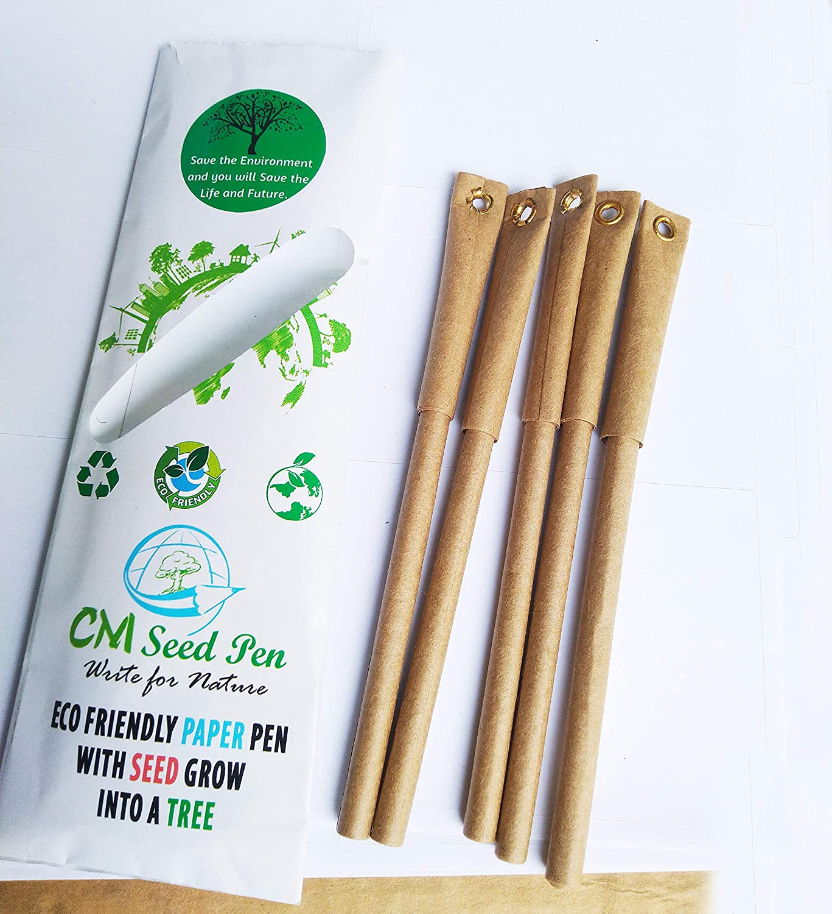
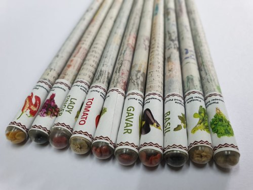
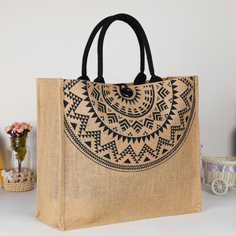
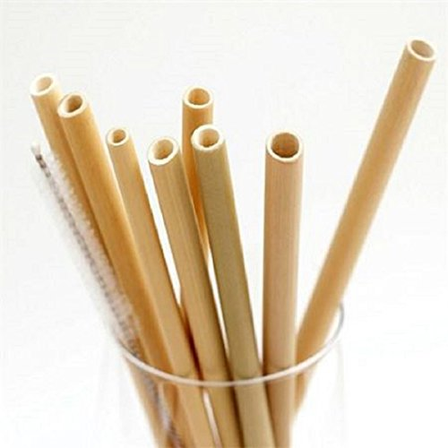
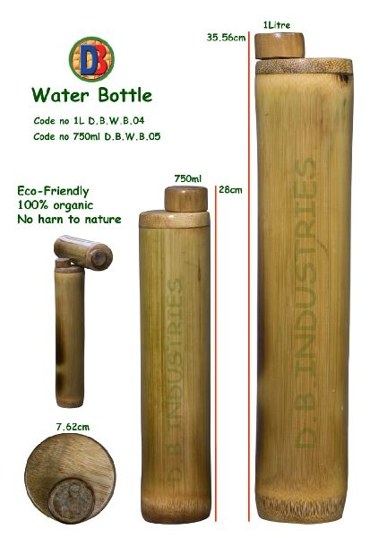

Seed paper, as it’s also known, is handmade paper embedded with seeds that can germinate and sprout when sown.
Seed paper is a type of handmade paper that includes any number of different plant seeds. The seeds themselves can still germinate after the papermaking process and they can sprout when the paper is planted in soil.
250/-

Ecofriendly Plantable Seed Pen
Seed pen, as it’s also known, is handmade pen embedded with seeds at the end that can germinate and sprout when sown.
Seed pen is a type of handmade pen that includes any number of different plant seeds. The seeds themselves can still germinate after the penmaking process and they can sprout when the pen is planted in soil.
150/-

Seed Pencil
Seed pencil, as it’s also known, is handmade pen embedded with seeds at the end that can germinate and sprout when sown.
Seed pencil is a type of handmade pen that includes any number of different plant seeds. The seeds themselves can still germinate after the pencilmaking process and they can sprout when the pencil is planted in soil.
90/-

Jute Bag
Jute fiber is completely 100% bio-degradable and ecologically friendly. ...
Jute is a natural fiber which is golden and silky shine
Jute is one of the most inexpensive vegetable fiber
Considering in terms of usage, global consumption, production or be its availability.
Jute fiber bag is not only environment-friendly rather it also saves the forest life the reason being jute stem has very high volume of cellulose that can be procured within 4-6 months, so it can meet cellulose and wood requirement of the world.
460/-

Bamboo Straws
The bamboo is steam cleaned and pressure washed and unlike metal straws, do not conduct the heat from hot drinks which may burn your mouth. Bamboo is also great for keeping the drink at the temperature in which it was poured at, meaning iced smoothies and milkshakes won’t give you brain freeze!
Bamboo is durable and robust, also it has no sharp edges which makes bamboo straws a safe for children to use. The best advantage to use bamboo straw is that it is eco-friendly, natural & organic and reusable.
85/-

Bamboo Bottle
The bamboo bottle is steam cleaned and pressure washed and unlike metal straws, do not conduct the heat from hot drinks which may burn your mouth. Bamboo bottle is also great for keeping the drink at the temperature in which it was poured at, meaning iced smoothies and milkshakes won’t give you brain freeze!
Bamboo is durable and robust, also it has no sharp edges which makes bamboo straws a safe for children to use. The best advantage to use bamboo bottle is that it is eco-friendly, natural & organic and reusable.